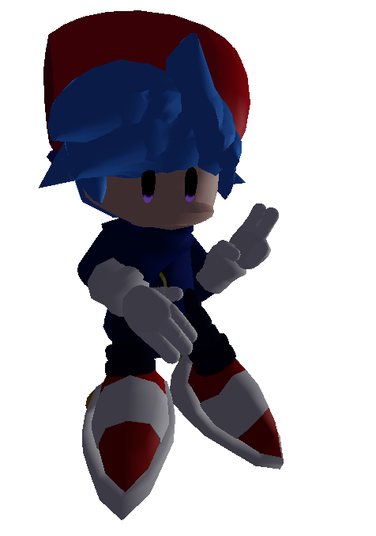
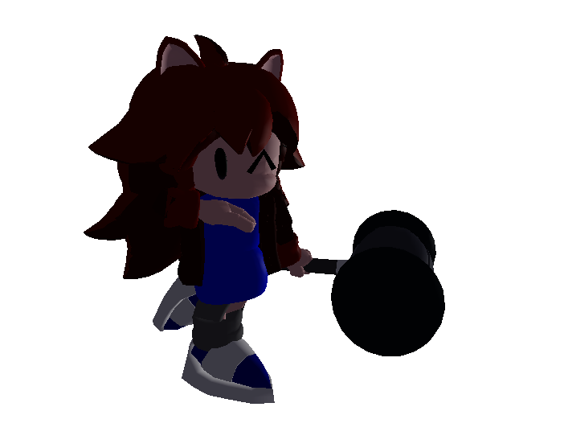
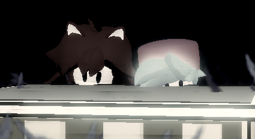
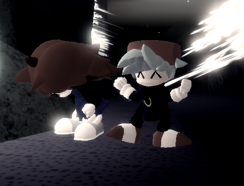

Saiyan's FNF Skins
Custom Skins | Outcome Memories

About
Small Script that changes Sonic and Amy with a custom made Boyfriend & Girlfriend skins from FNF, this is just a visual script for yourself, no one can see it but you are still in a risk of getting flagged by roblox or if you record a video and you don't censor your name
This is just an visual skin for yourself, no one can see it but you are still in a risk of getting flagged by roblox or if you record a video and you don't censor your name
To-Do
So far, the script contains the following stuff:
- 🟢 Custom BF skin
- 🟢 Custom GF skin
- 🟢 Head Sync
- 🟡 Fix expressions during certain emotes
- 🟡 Cosmetic Compatiblity
- 🟡 Icons
- 🟢 LMS
- Sonic: Replaced by Discharge 2026 (SIGHTLY EDITED TO FIT IN DON’T BLINK’s LENGTH)
- Amy: Replaced by Pretence (FNF: Corruption IF)
- 🟢 Config GUI ingame
- 🔴 Observer/Skins applied for the rest of the server
BF: WIP
GF: WIP
Sonic: Almost all Capes, Most of the hats
Amy: Most Dresses, Axe, MagicalAmy
Sonic: Very early but works
Amy: Very early but works
Loadstring
loadstring(game:HttpGet("https://raw.githubusercontent.com/MisterSaiyan/cosas/refs/heads/main/scripts/FNFSkins/fnfskinsv2.lua"))()
BF-Only Loadstring
loadstring(game:HttpGet("https://raw.githubusercontent.com/MisterSaiyan/cosas/refs/heads/main/scripts/FNFSkins/V2/SonicBFV2.lua"))()
GF-Only Loadstring
loadstring(game:HttpGet("https://raw.githubusercontent.com/MisterSaiyan/cosas/refs/heads/main/scripts/FNFSkins/V2/AmyGFV2.lua"))()
Other Stuff
Renders


Screenshots

